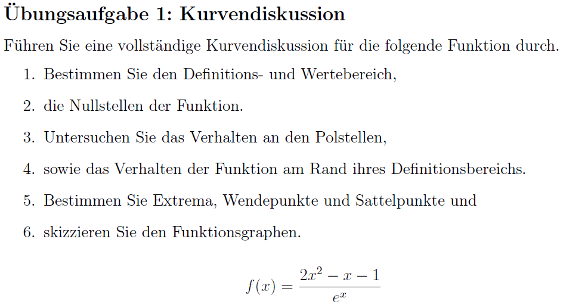
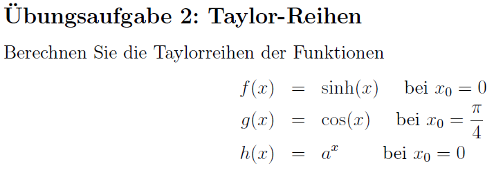
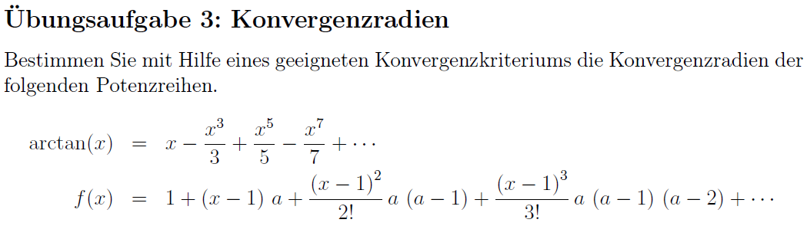
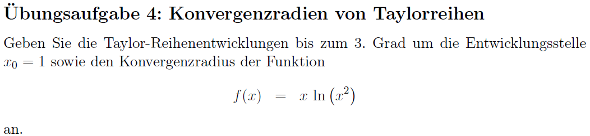

8. Übungsblatt Mathemathik I für ChemikerInnen
Die Übungsaufgaben sind dazu gedacht, Ihnen zu zeigen, wie die Methoden, die in der
Vorlesung vorgestellt wurden, in Anwendung gebracht werden. Sie erhalten die Lösungen
hierzu entweder in den Tutorien oder auf der ISIS-Seite des Kurses als Dokument oder
Lehrvideo.
1. Übungsaufgabe

Übungsblatt 8; Übungsaufgabe 1
Video zu Übungsaufgabe 1
VIDEO
Kurvendiskussion
Urheberschaft liegt bei Franziska Egbers;
Verwertung fällt unter Lizenz CC-BY-SA 3.0
2. Übungsaufgabe

Übungsblatt 8; Übungsaufgabe 2
Video zu Übungsaufgabe 2 (1/3)
VIDEO
Taylorreihe von Funktionen 1
Urheberschaft liegt bei Franziska Egbers;
Verwertung fällt unter Lizenz CC-BY-SA 3.0
Video zu Übungsaufgabe 2 (2/3)
VIDEO
Taylorreihe von Funktionen 2
Urheberschaft liegt bei Franziska Egbers;
Verwertung fällt unter Lizenz CC-BY-SA 3.0
Video zu Übungsaufgabe 2 (3/3)
VIDEO
Taylorreihe von Funktionen 3
Urheberschaft liegt bei Franziska Egbers;
Verwertung fällt unter Lizenz CC-BY-SA 3.0
3. Übungsaufgabe

Übungsblatt 8; Übungsaufgabe 3
Video zu Übungsaufgabe 3 (1/2)
VIDEO
Konvergenzradien von Potenzreihen 1
Urheberschaft liegt bei Franziska Egbers;
Verwertung fällt unter Lizenz CC-BY-SA 3.0
Video zu Übungsaufgabe 3 (2/2)
VIDEO
Konvergenzradien von Potenzreihen 2
Urheberschaft liegt bei Franziska Egbers;
Verwertung fällt unter Lizenz CC-BY-SA 3.0
4. Übungsaufgabe

Übungsblatt 8; Übungsaufgabe 4
Video zu Übungsaufgabe 4
VIDEO
Konvergenzradien von Taylorreihen
Urheberschaft liegt bei Franziska Egbers;
Verwertung fällt unter Lizenz CC-BY-SA 3.0